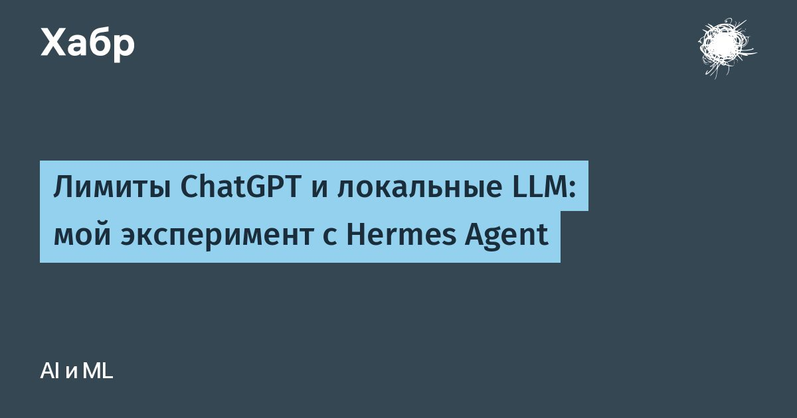

Лимиты ChatGPT и локальные LLM: мой эксперимент с Hermes Agent
Проверил, можно ли разгрузить Hermes Agent с помощью локальных LLM на домашнем ПК с RTX 3080 и 32 ГБ RAM.
Сравнил Qwen и GLM на архитектурных задачах, редактуре и извлечении данных, испытал разные квантования и подключил Hermes на Mac к модели на Windows.
В статье — условия испытаний, замеры скорости и памяти, конкретные ошибки и причины итогового выбора Qwen3.5 9B.
Подключение заработало, но получить привычное качество ответов и подтвердить экономию облачного лимита пока не удалось.
Читать далее